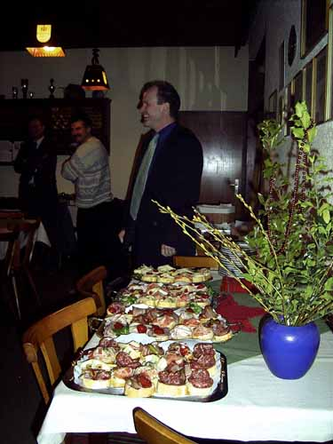
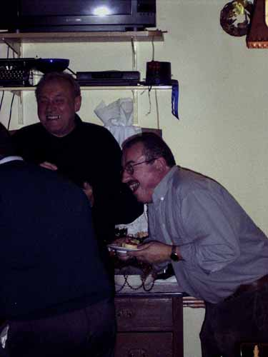
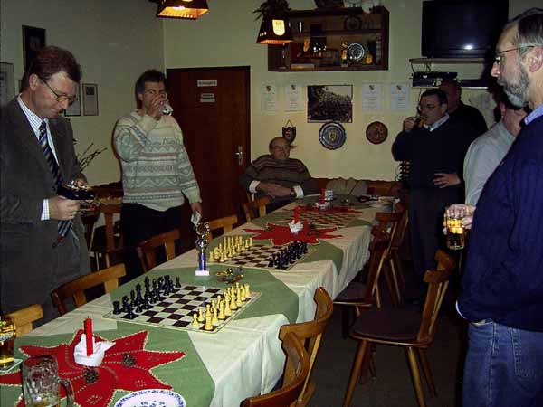
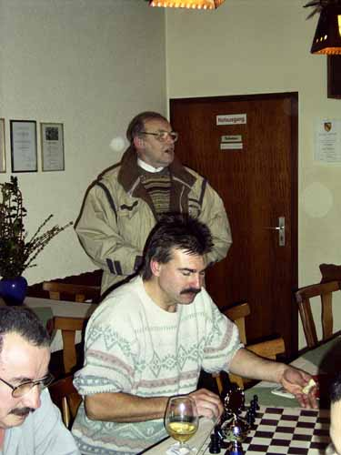
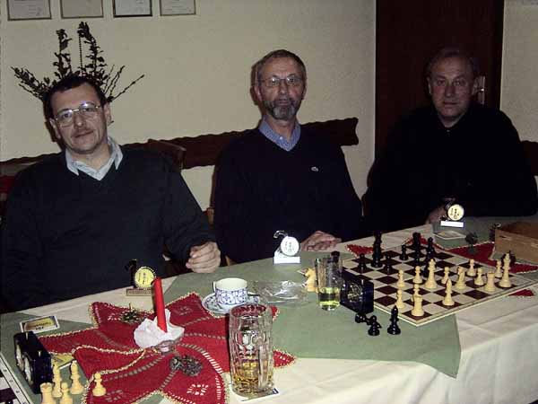
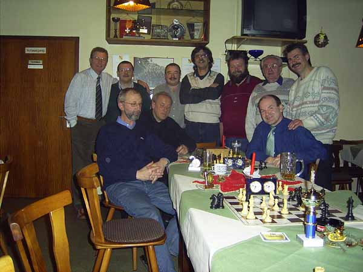

09.12.03
Ehrungen Sommerpokal
und
Nikolausblitzturnier

Ehrung für das Sommerpokalturnier 2003
Zum ersten Mal wird der Wanderpokal des Wirtpaares vergeben
von links: Vroni, Peter, Josef Jurgetz (3.), Roland Bahner (1.),
Bernhard Bürgin (2.) und Heinz Meyer (1. Vorstand)

Ein "kleiner" Imbiss war vorbestellt...

... und mundete hervorragend.

Welchen Witz Elmar da wohl wieder erzählt hat?

Vorbereitungen zum Blitzturnier

Und los geht's

Meyer gegen Korb

Konzentriert bei der Sache.

Die Sieger des Blitzturniers:
von links: Karl-Heint Pflaum (1.),
Heinz Meyer (2.) und Waldemar Schlothauer (3.)

Abschlussgruppenbild leider ohne Dame
Und hier noch die Endtabelle: